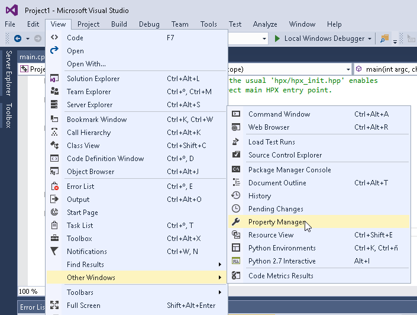

Visual Studio¶
Visual Studio¶
Conan can be integrated with Visual Studio in two different ways:
- Using the cmake generator to create a conanbuildinfo.cmake file.
- Using the visual_studio generator to create a conanbuildinfo.props file.
With CMake¶
Use the cmake generator, or cmake_multi, if you are using cmake to machine-generate your Visual Studio projects.
Check the generator section to read about the cmake generator. Check the official CMake docs to find out more about generating Visual Studio projects with CMake.
However, beware of some current cmake limitations, such as not dealing well with find-packages, because cmake doesn’t know how to handle finding both debug and release packages.
Note
If you want to use the Visual Studio 2017 + CMake integration, check this how-to
With visual_studio generator¶
Use this, or visual_studio_multi, if you are maintaining your Visual Studio projects, and want to use Conan to to tell Visual Studio how to find your third-party dependencies.
You can use the visual_studio generator to manage your requirements via your Visual Studio project.
This generator creates a Visual Studio project properties file, with all the include paths, lib paths, libs, flags etc, that can be imported in your project.
Open conanfile.txt and change (or add) the visual_studio generator:
[requires]
Poco/1.7.8p3@pocoproject/stable
[generators]
visual_studio
Install the requirements:
$ conan install
Go to your Visual Studio project, and open the Property Manager, usually in View -> Other Windows -> Property Manager.
Click the “+” icon and select the generated conanbuildinfo.props file:

Build your project as usual.
Note
Remember to set your project’s architecture and build type accordingly, explicitly or implicitly, when issuing the conan install command. If these values don’t match, you build will probably fail.
e.g. Release/x64
See also
Check the Reference/Generators/visual_studio for the complete reference.
Calling Visual Studio compiler¶
You can call your Visual Studio compiler from your build() method using the VisualStudioBuildEnvironment
and the tools.vcvars_command.
Check Build with Visual Studio section for more info.
Build an existing Visual Studio project¶
You can build an existing Visual Studio from your build() method using the tools.build_sln_command.
See also
Check the tools.build_sln_command() reference section for more info.
Toolsets¶
You can use the subsetting toolset of the Visual Studio compiler to specify a custom toolset.
It will be automatically applied when using the CMake() build helper, tools.build_sln_command or tools.msvc_build_command.
The toolset can be also specified manually in these build helpers with the toolset parameter.
By default, Conan will not generate a new binary package if
the specified compiler.toolset matches an already generated package for the corresponding
compiler.version. Check the package_id() reference to know more.
See also
- Check the tools.build_sln_command() reference section for more info.
- Check the tools.msvc_build_command() reference section for more info.
- Check the CMake() reference section for more info.